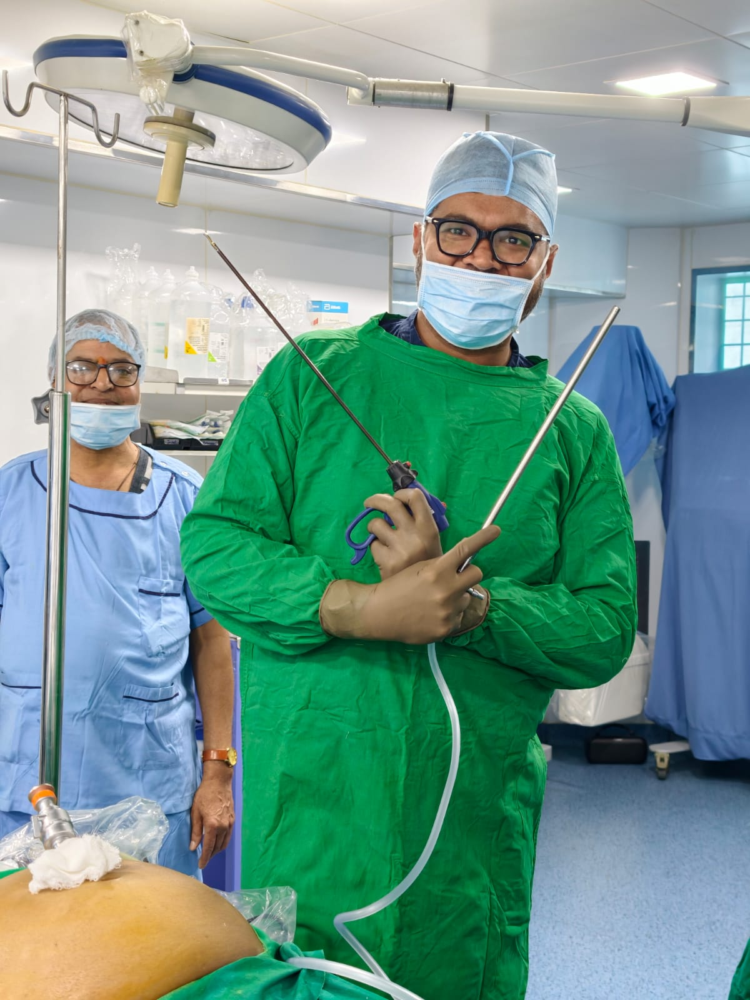

14+
Years of
Excellence
Excellence
About Dr. Manke
Pioneering Cancer Surgery with Precision & Compassion
Dr. Aditya Manke is one of India's most trusted and decorated Surgical Oncologists, practicing at Sanjivani Cancer Centre, Thane & Palghar, and VHMC Hospital, Virar. His approach combines internationally trained expertise with deeply personal patient care.
He was the pioneer in establishing Northern Maharashtra's first Laparoscopic & Robotic Cancer Surgery unit at HCG Cancer Centre Nashik and was among the first in India to introduce HIPEC treatment. He is certified on both the Intuitive Da Vinci and CMR Versius robotic systems.
-
MBBS & MS Grant Medical College & Sir J.J. Group of Hospitals, Mumbai
-
Fellowship in Surgical Oncology Tata Medical Centre, Kolkata (Gastrointestinal Cancers focus)
-
Robotic Cancer Surgery & HIPEC Training The Christie NHS Foundation Trust, Manchester, UK
-
MRCS & FRCS Royal College of Surgeons, Edinburgh, UK
-
FEBS – Surgical Oncology Fellowship of European Board of Surgery, Brussels (2016)
-
Advanced HBP & GI Training Sir Ganga Ram Hospital, New Delhi